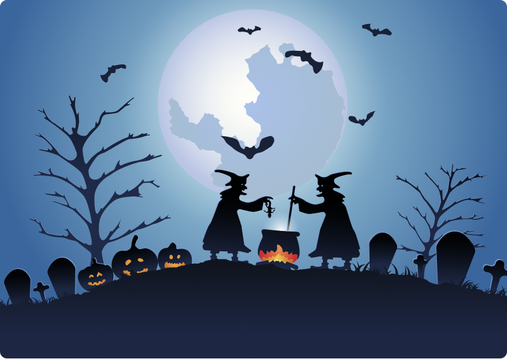

Ireland
Halloween can trace back its origins to Celtic celebrations, such as Samhain. So, it’s no surprise that there the Irish celebrate Halloween in great style. Traditions often include fortune-telling, bonfires, eating fruitcakes, and, of course, dressing up. Ireland’s Derry City hosts the biggest Halloween festival in Europe, the Banks of Foyle Halloween Carnival. Here you can enjoy haunted houses, ghost tours parades, horror-story telling and much more. You can also check out the more relaxed Spirits of Meath festival in Meath, which features pumpkin carving contests.